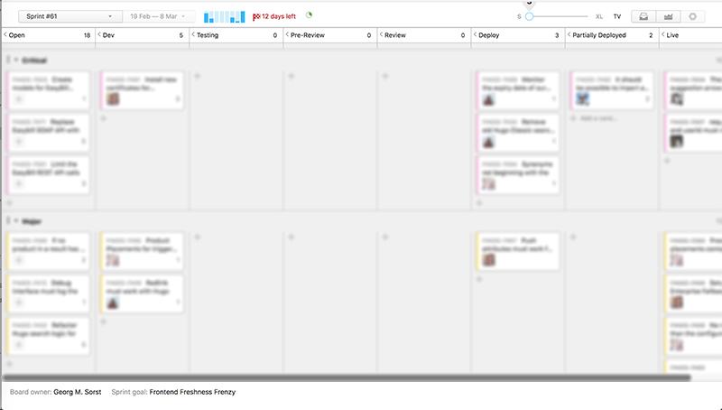
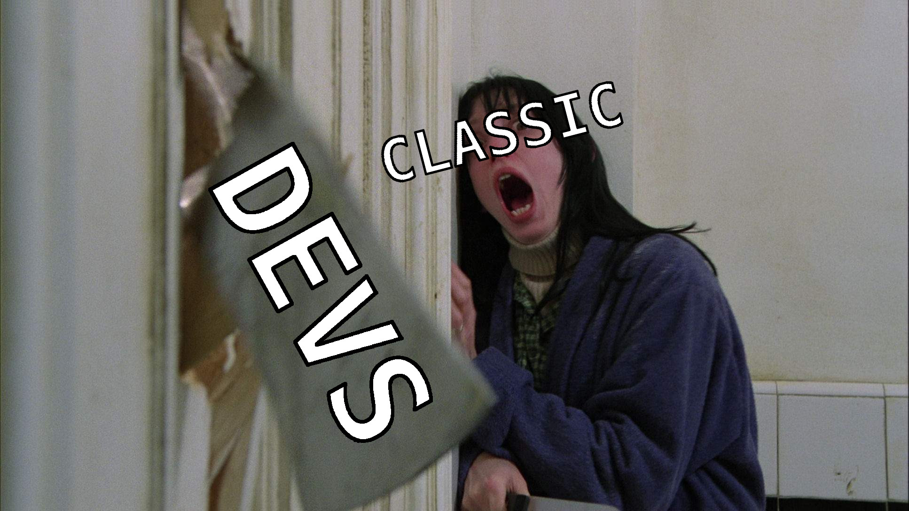
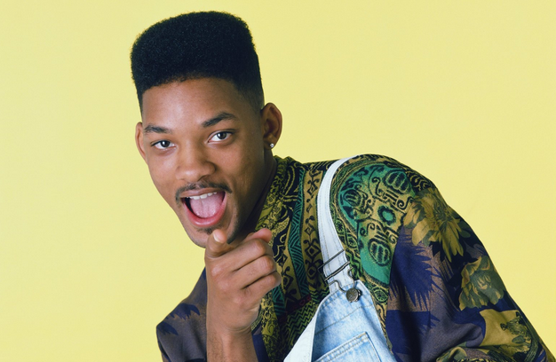

How to make your team more productive
Learnings from 60 Sprints

Daniel Blaichinger
- MMT 2009 @ FH Salzburg
- Since 2014 @ FINDOLOGIC
- Introduced Scrum in 2015

Scrum
Why did we change?
- Long term planning
- Centralized Knowledge
- Vacation & illness
- Missing feedback !
PivotalTracker

Youtrack

Essential parts of Scrum
(for us)
Circle of Sprint

Planning Poker

Planning Poker

Planning Poker
Long term planningVacation & illness
User stories
- Define it in a way that every developer can finish it.
- In case you forgot something → Definition of Go.
Different kinds
- If the scope of the story is clear and defined → Normal story for estimation
- If the task is not clear or unexpected impediments could occur → Time-Box Story
User stories
Centralized Knowledge
Retrospective
- What went well during the sprint?
- What went wrong during the sprint?
- What could we do differently to improve?
Retrospective
Missing feedback
What can be done to give the team the focus they need?
Homie

- "Gestörte"
- Helping out support and project management
- Debugging code to investigate potential bugs
What we learned from
60 retrospectives
What we learned
- Avoid bottlenecks on each lane → Review
- Keep your automation running
Cannot allocate memory - Automate deployments
- Automate testing → 3rd-Party JS
What we learned
- Write unit tests for 0, 1, 2+ cases → Data Provider
- Code refactoring preferable within smaller stories
- Make internal trainings for non-technical colleagues to avoid disturbance during a sprint
- There is always something which can be improved!
H 3 - Hardcore Hugo Hackathon
F 3 - Frontend Freshness Frenzy
Conclusion
- If suitable, use an agile software method and adapt it to your needs!
- Do not underestimate the retrospective, it helps to be more efficent over time.
- If possible, automate your regular tasks to reduce mistakes and save time.
- Be transparent in what your are doing and coordinate goals with other departments.
- Everyone has to respect the basic rules of Scrum
- The scope of an estimated story has to be kept, otherwise it needs a re-estimation
- Additional work during a sprint is not acceptable, as the defined sprint goal may not be reached
- Avoid disturbance → Delegate to homie

If the organization allows interruptions to the team’s work during the Sprint, then the team will not meet its commitments and this will diminish trust between the team and its stakeholders.
That lack of trust will lead to onerous control mechanisms that reduce the team’s ability to self-organize which, in turn, will prevent the team from becoming a high-performance team.

We are hiring!
UI/UX Expert
Web Developer
Java Developer
Questions?